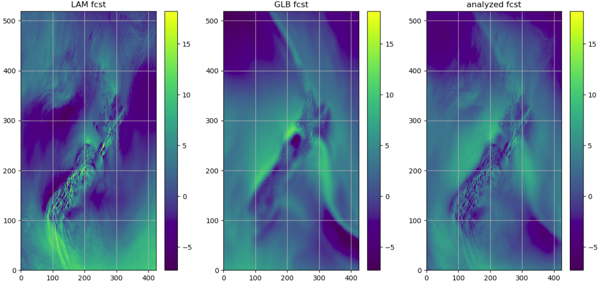

Welcome to VAR_BLENDING documentation¶
{kind=link}
VAR_BLENDING package provides a Variational based method to blend different NWP models (e.g., a global model and a limited area model) on a spectral space.
- Release: 0.0.1
- Date: 2018-12-28
This package is developed by New Zealand Meteorological Service, and to work with Amazon Web Service Storage Server S3
Questions go to: sijin.zhang@metservice.com
There are a few assumptions of using this method:
- a global model (e.g., GFS or ECMWF) is able to provide better large scale weather patterns than a limited area model (e.g., high resolution WRF)
- the truth of atmosphere lies between the global model and limited area model
- there are no correlations among the fields to be blended
- a global model and a limited area model contains similar amount of energies for the large scale patterns (e.g., where the wavenumber is bigger than a certain value)
- the imbalances among fields after the blending analysis can be solved by the model itself
Methodology¶
Sample workflow¶
- Step 1: preparing model errors
- Step 2: running Variational blending
- STEP 2.1 Determine the model blending criteria
- STEP 2.2 Load model data, the model errors and auxiliary files
- STEP 2.2.1 Load model forecasts
- STEP 2.2.2 Compare the current and historical power differences between LAM and global models
- STEP 2.2.3 Load model errors
- STEP 2.2.4 Load user defined error ratio profile and update model errors
- STEP 2.2.5 convert model errors from an array to a matrix
- STEP 2.2.6 create the final error matrix:
- STEP 2.3 Best Linear Unbiased Estimator
- STEP 2.4 Running analysis